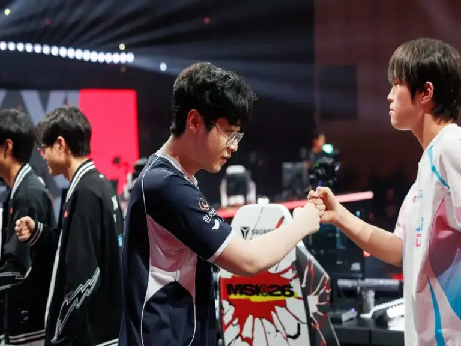
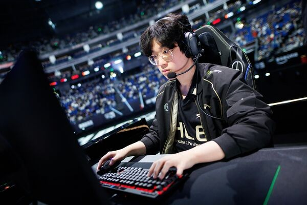

▲ MSI 决赛 Zeus 与 Bin 赛前握手。半年后，Bin 还了一个 2-0。图源：LoL Esports
S16 全球总决赛 · 瑞士轮生死战
BLG 2-0 横扫 HLE！
Bin 把 Zeus 砍成 0-2
MSI 冠军止步瑞士轮 · Knight 破心魔 · BLG 强势晋级八强
先说结果：BLG 2-0 横扫 HLE，晋级八强。HLE 止步瑞士轮，结束本届全球总决赛。
第一局 41 分钟逆风翻盘，第二局直接碾压。两场比赛，两种赢法，但结果只有一个——BLG 把 MSI 冠军送回了家。
总比分：BLG 2-0 HLE
第一局：BLG 翻盘胜（41 分钟，Knight 发条四杀）
第二局：BLG 碾压胜（32 分钟，Bin 奥拉夫绕后 + Knight 三杀）
BLG 阵容（G2）：Bin 奥拉夫 / Xun 潘森 / Knight 洛克 / Viper 芸阿娜 / ON 璐璐
HLE 阵容（G2）：Zeus 奎桑提 / Kanavi 蝎子 / Zeka 辛德拉 / Gumayusi 女警 / Delight 卡尔玛
1
Bin 这一局，把 Zeus 砍成了 0-2

▲ Bin（陈泽彬），BLG 上路。图源：Liquipedia
第二局，Bin 拿了奥拉夫，Zeus 拿了奎桑提。
11 分 45 秒，Bin 奥拉夫上路越塔，强行单杀 Zeus 奎桑提。Zeus 的战绩来到 0-2。
16 分钟，HLE 下路三人越塔，Kanavi 蝎子扛塔先被 Knight 融化，Zeus 奎桑提也走不掉，BLG 打出 0 换 2，经济领先 3000。
28 分 35 秒，土龙魂团——Bin 奥拉夫绕后切入，配合 Knight 打出 1 换 5 团灭 HLE。BLG 顺势拿下大龙，经济优势直接拉到 1 万以上。
从 MSI 决赛的 2-3，
到今天把 Zeus 打成 0-2。
上路这道坎，Bin 跨过去了。
2
Knight 也破了心魔
如果说第一局的发条四杀是「巧」，第二局的洛克就是「狠」。
4 分钟，Knight 洛克来到下路，见面瞬杀 Delight 卡尔玛，拿下一血。
11 分钟，Knight 中路 1v2，ON 璐璐到场给大，硬把 HLE 中野打退。
28 分钟龙魂团，Knight 洛克狂轰三杀，直接团灭 HLE。
31 分 58 秒，BLG 冲上 HLE 高地，Knight 融化 Gumayusi 女警，1 换 3，一波推平基地。
"Bin 哥奥拉夫绕后切进战场，配合 Knight 洛克打出一换五团灭 HLE。"
—— 虎扑电竞 赛后战报
Knight 的「大赛软脚虾」标签，今天可以撕了。两局比赛，一个四杀，一个三杀，关键团一次没掉链子。
3
"世一上"的答案，今天偏向 Bin

▲ Zeus（崔祐齐），HLE 上路。图源：Liquipedia
赛前我们聊过那个问题——"世一上"到底是谁。
MSI 决赛 Zeus 赢了，他说自己是世界上最好的上单。Bin 两次 2-3 输给他，不服。
今天这场 BO3，Bin 用两场胜利给出了自己的回答：第一局撑到队友接管比赛，第二局直接越塔单杀 Zeus 两次。
0-2 的战绩摆在那里。不是 Zeus 不强，而是今天 Bin 打得更好。
两届决赛输给你，
今天生死局，我还你一个横扫。
"世一上"的争论不会因为一场 BO3 彻底结束，但至少今天，天平在 Bin 这边。
4
接下来看什么
一、HLE 回家了。MSI 冠军止步瑞士轮，Zeus 从去年八强到今年十六强，Gumayusi 从三连冠到瑞士轮出局。落差很大，但这就是世界赛。
二、LPL 三队晋级八强。iG、TES、BLG，加上 iG 之前爆冷掀翻 HLE，LPL 这届对 LCK 的战绩相当亮眼。
三、八强抽签。BLG 以 3-2 的身份晋级，大概率在八强首轮撞上 GEN 或 DK——两支 3-0 的队伍。硬仗还在后面。
但至少今天，先恭喜 BLG。
地狱归来。
BLG，八强见。
评论区聊聊：
今天 Bin 的表现，够不够封一句"世一上"？
八强抽到 GEN 或 DK，你觉得 BLG 能走多远？
点个关注。八强抽签结果出来后，我会第一时间整理对阵和看点。
资料来源：直播吧、懂球帝、虎扑电竞、微博电竞、LoL Esports。比赛数据以官方最终统计为准。